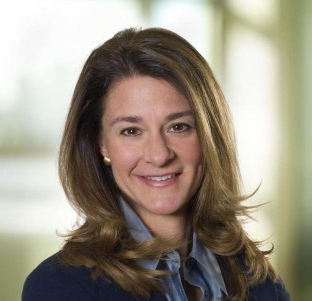
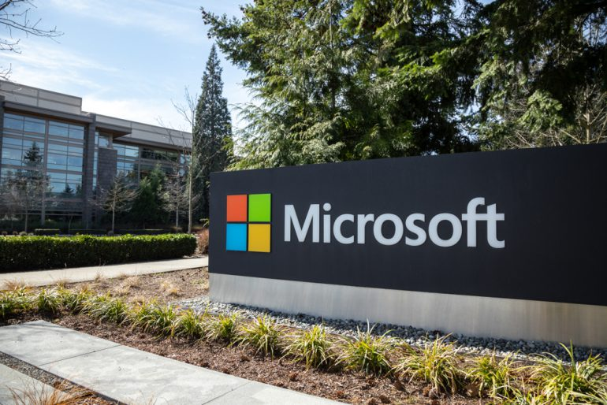
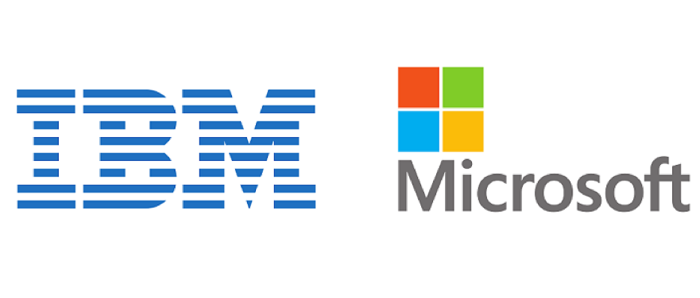
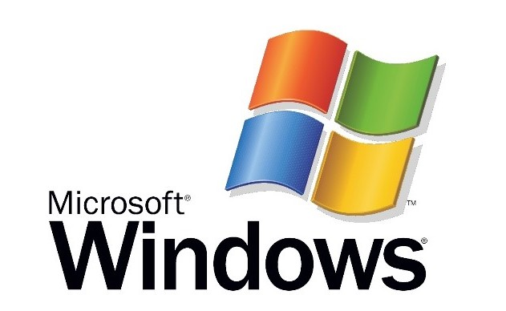

Entrepreneur and businessman Bill Gates and his business partner Paul Allen founded and built the world's largest software business, Microsoft, through technological innovation, keen business strategy and aggressive business tactics. In the process, Gates became one of the richest men in the world. In February 2014, Gates announced that he was stepping down as Microsoft's chairman to focus on charitable work at his foundation, the Bill and Melinda Gates Foundation.
Click to see Quick Facts, then close it
Name:
Bill Gates.
Birth Date:
October 28, 1955 (age 64).
Did You Know?
Bill Gates is one of the richest men alive.
Net worth:
102.1 billion $ (2020).
Education:
Lakeside School, Harvard College.
Place of Birth:
Seattle, Washington,U.S.A.
Zodiac Sign:
Scorpio.
Wife:
Melinda Gates.
Children:
3.
Gates's Family

Jennifer Gates
Rory John Gates
Phoebe Adele Gates
Melinda Gates
"daughter"
"son"
"daughter"
"wife"
Early life of Bill Gates
Gates was born William Henry Gates III on October 28, 1955, in Seattle, Washington. Gates grew up in an upper-middle-class family with his older sister, Kristianne, and younger sister, Libby. Their father, William H. Gates Sr., was a promising, if somewhat shy, law student when he met his future wife, Mary Maxwell. She was an athletic, outgoing student at the University of Washington, actively involved in student affairs and leadership.
The Gates family atmosphere was warm and close, and all three children were encouraged to be competitive and strive for excellence. Gates showed early signs of competitiveness when he coordinated family athletic games at their summer house on Puget Sound. He also relished in playing board games (Risk was his favorite) and excelled at Monopoly.
Gates had a very close relationship with his mother, Mary, who after a brief career as a teacher devoted her time to helping raise the children and working on civic affairs and with charities. She also served on several corporate boards, including those of the First Interstate Bank in Seattle (founded by her grandfather), the United Way and International Business Machines (IBM). She would often take Gates along when she volunteered in schools and at community organizations
Bill Gates foundation of Microsoft:
ltair 8800 computer Bill Gates founded Microsoft in 1976 when he formed a contract with MITS (Micro Instrumentation and Telemetry Systems) to develop a basic operating system for their new microcomputers. In the early days, Bill Gates would review every line of code. He was also involved in several aspects of Microsoft's business such as packing and sending off orders.
Bill Gates and Paul Allen in 1981
The big break for Microsoft came in 1980 when IBM approached them for a new BASIC operating system for its new computers. In the early 1980s, IBM was by far the leading PC manufacturer. However, increasingly, there developed many IBM PC clones; (PCs produced by other companies compatible with IBM's). Microsoft worked hard to sell its operating system to these other companies. Thus Microsoft was able to gain the dominant position of software manufacture just as the personal computer market started to boom. Since its early dominance, other companies have struggled to displace Microsoft as the dominant provider of computer operating software. Programs like Microsoft Word and Excel have become the industry standard.

IBM partnership:
IBM, the leading supplier of computer equipment to commercial enterprises at the time, approached Microsoft in July 1980 concerning software for its upcoming personal computer, the IBM PC. IBM first proposed that Microsoft write the BASIC interpreter. IBM's representatives also mentioned that they needed an operating system, and Gates referred them to Digital Research (DRI), makers of the widely used CP/M operating system.IBM's discussions with Digital Research went poorly, however, and they did not reach a licensing agreement. IBM representative Jack Sams mentioned the licensing difficulties during a subsequent meeting with Gates and asked if Microsoft could provide an operating system. A few weeks later, Gates and Allen proposed using 86-DOS, an operating system similar to CP/M, that Tim Paterson of Seattle Computer Products (SCP) had made for hardware similar to the PC. Microsoft made a deal with SCP to be the exclusive licensing agent of 86-DOS, and later the full owner. Microsoft employed Paterson to adapt the operating system for the PC and delivered it to IBM as PC DOS for a one-time fee of $50,000.
Rather than the contract itself, which earned Microsoft a relatively small fee, the prestige brought to Microsoft by IBM's adoption of their operating system was the origin of Microsoft's transformation from a small business to the World's leading software company. Gates had not offered to transfer the copyright on the operating system to IBM because he believed that other personal computer makers would clone IBM's PC hardware.They did, making the IBM-compatible PC, running DOS, a de facto standard. The sales of MS-DOS (the version of DOS sold to customers other than IBM) made Microsoft a major player in the industry.The press quickly identified Microsoft as being very influential on the IBM PC. PC Magazine asked if Gates was "the man behind the machine?".
Gates oversaw Microsoft's company restructuring on June 25, 1981, which re-incorporated the company in Washington state and made Gates the president and chairman of the board, with Paul Allen as vice president and vice chairman. In early 1983, Allen left the company after receiving a Hodgkin lymphoma diagnosis, effectively ending the formal business partnership between Gates and Allen, which had been strained months prior due to a contentious dispute over Microsoft equity.Later in the decade, Gates repaired his relationship with Allen and together the two donated millions to their childhood school Lakeside.They remained friends until Allen's death in October 2018.

Windows:
In 1990 Microsoft released its first version of Windows. This was a breakthrough in operating software as it replaced text interfaces with graphical interfaces. It soon became a best seller and was able to capture the majority of the operating system market share. In 1995 Windows 95 was released, setting new standards and features for operating systems. This version of Windows has been the backbone of all future releases from Windows 2000 to the latest XP and Vista.
Throughout his time in office, Bill Gates has been keen to diversify the business of Microsoft. For example, Microsoft's Internet Explorer became the dominant web browser, although this was primarily because it came pre-installed on most new computers. In recent years, Internet Explorer has seen its market share slip.
One area where Microsoft has never been successful is in the area of search engines. MSN live search has struggled to gain more than 5% of market share. In this respect, Microsoft has been dwarfed by Google. Nevertheless, the success of Microsoft in cornering various aspects of the software market has led to several anti-trust cases. In 1998 US v Microsoft, Microsoft came close to being broken up into three smaller firms. However, on appeal, Microsoft was able to survive as a single firm. Although Microsoft was the dominant computer firm of the 1980s, and 1990s, they are now seen as an ageing and declining company compared to the more dynamic Google and Apple.

Philanthropic Activities:
Bill Gates is married to Melinda French (married in 1992). They have three children Jennifer (1996), Rory (1999) and Phoebe (2002). With his wife, Bill Gates formed the Bill & Melinda Gates Foundation. Bill Gates says much of the inspiration came from the example of David Rockefeller. Like Rockefeller, Gates has sought to focus on global issues ignored by the government; he also expressed an interest in improving the standards of public school education in the US. He has appeared with Oprah Winfrey to promote this objective. In respect to charitable, philanthropic activities Gates has also received encouragement from investor Warren Buffet, who has given away $17 billion, through the Gates Foundation. Gates has also sought to prioritise issues that improve the health of the population rather than vanity projects. Speaking at a TED conference in 2009, he said about malaria.
Leaving Microsoft:
In 2000, Gates stepped down from the day-to-day operations of Microsoft, turning over the job of CEO to college friend Steve Ballmer, who had been with Microsoft since 1980. Gates positioned himself as chief software architect so he could concentrate on what was for him the more passionate side of the business, though he remained chairman of the board.
In 2006, Gates announced he was transitioning himself from full-time work at Microsoft to devote more quality time to the foundation. His last full day at Microsoft was June 27, 2008.
In February 2014, Gates stepped down as chairman of Microsoft in order to move into a new position as technology adviser. Longtime Microsoft CEO Steve Ballmer was replaced by Satya Nadella.
🏆
Click to see Awards
Gates has received numerous awards for philanthropic work. Time magazine named Gates one of the most influential people of the 20th century. The magazine also named Gates and his wife Melinda, along with rock band U2's lead singer, Bono, as the 2005 Persons of the Year.
Gates holds several honorary doctorates from universities throughout the world. He was knighted as an honorary Knight Commander of the Order of the British Empire bestowed by Queen Elizabeth II in 2005.
In 2006, Gates and his wife were awarded the Order of the Aztec Eagle by the Mexican government for their philanthropic work throughout the world in the areas of health and education.
In 2016, the couple were again recognized for their philanthropic work when they were named recipients of the Presidential Medal of Freedom by President Barack Obama.
✨
Click to know Interesting Facts about Bill Gates
Bill's nickname as a child was "Trey" which was given to him by his grandmother.
He scored a 1590 out of 1600 on the SAT.
At first Microsoft had a hyphen in the name "Micro-soft". It was a combination of microcomputer and software.
When Microsoft first started out, Gates would look at every line of code before a new software product shipped.
In 2004, Gates predicted that email spam would be gone by 2006. He was wrong on that one!
He was dubbed an honorary knight by Queen Elizabeth. He does not use the title "Sir" because he is not a citizen of the United Kingdom.
🌠
Click to read Quotes by Bill Gates
1. Success is a lousy teacher. It seduces smart people into thinking they can't lose.
2. Don't compare yourself with anyone in this world.. if you do so,you are insulting yourself.
3. Your most unhappy customers are your greatest source of learning.
4. Be nice to nerds. Chances are you'll end up working for one.
5. Life is not fair - get used to it!
6. Patience is a key element of success.
7. It's fine to celebrate succes, but it is more important to heed the lessons of failure.
8. To win big,you sometimes have to take big risks.
9. I choose a lazy person to do a hard job. Because a lazy person will find an easy way to do it.
10. If you think your teacher is tough, wait till you get a boss.

 Gates was born William Henry Gates III on October 28, 1955, in Seattle, Washington. Gates grew up in an upper-middle-class family with his older sister, Kristianne, and younger sister, Libby. Their father, William H. Gates Sr., was a promising, if somewhat shy, law student when he met his future wife, Mary Maxwell. She was an athletic, outgoing student at the University of Washington, actively involved in student affairs and leadership.
The Gates family atmosphere was warm and close, and all three children were encouraged to be competitive and strive for excellence. Gates showed early signs of competitiveness when he coordinated family athletic games at their summer house on Puget Sound. He also relished in playing board games (Risk was his favorite) and excelled at Monopoly.
Gates had a very close relationship with his mother, Mary, who after a brief career as a teacher devoted her time to helping raise the children and working on civic affairs and with charities. She also served on several corporate boards, including those of the First Interstate Bank in Seattle (founded by her grandfather), the United Way and International Business Machines (IBM). She would often take Gates along when she volunteered in schools and at community organizations
Gates was born William Henry Gates III on October 28, 1955, in Seattle, Washington. Gates grew up in an upper-middle-class family with his older sister, Kristianne, and younger sister, Libby. Their father, William H. Gates Sr., was a promising, if somewhat shy, law student when he met his future wife, Mary Maxwell. She was an athletic, outgoing student at the University of Washington, actively involved in student affairs and leadership.
The Gates family atmosphere was warm and close, and all three children were encouraged to be competitive and strive for excellence. Gates showed early signs of competitiveness when he coordinated family athletic games at their summer house on Puget Sound. He also relished in playing board games (Risk was his favorite) and excelled at Monopoly.
Gates had a very close relationship with his mother, Mary, who after a brief career as a teacher devoted her time to helping raise the children and working on civic affairs and with charities. She also served on several corporate boards, including those of the First Interstate Bank in Seattle (founded by her grandfather), the United Way and International Business Machines (IBM). She would often take Gates along when she volunteered in schools and at community organizations